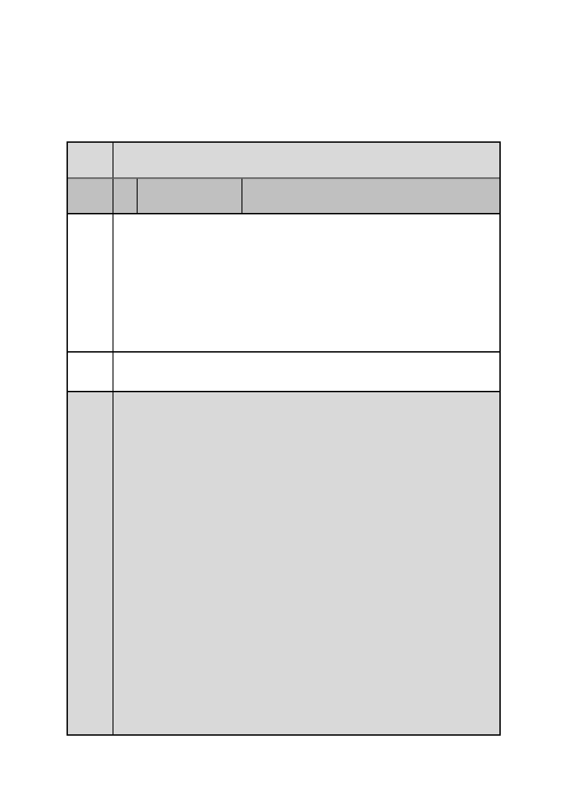

四、 本案公民或團體陳情意見，申請單位及市府回應詳綜理表，
審決同以上所列決議。
臺北市都市計畫委員會 公民或團體陳情意見綜理表
案名
變更臺北市士林區福林段二小段 593 地號土地住宅區為大專用地
（國立陽明大學）主要計畫案
編
號
1 陳情人
王○貞
陳情
理由
我是租在士林官邸社區住戶，我反對在福林段二小段 593 地號土
地住宅區為大專用地（國立陽明大學）主要計畫案。
我反對的原因主要是世界綠地越來越少，世界森林越來越少，要
環保，所以我反對建立。
而且我更反對建立醫學學校在這裡，我不相信他們那學校土地不
夠，這是貪，像雪山隧道破壞國家大自然環境，那工程師為了保
護他們同事殉職，現在政府又說道路不夠，又想動到花蓮的土地，
這就是所謂人性的貪。
建議 我反對在福林段二小段 593 地號土地住宅區為大專用地（國立陽
辦法 明大學）主要計畫案
申請
單位
及
市府
回應
ㄧ、本計畫範圍於 89 年 02 月 24 日府都二字第 8900921300 號公
告「變更臺北市士林官邸暨附近地區主要計畫案」變更為住
宅區，續於 93 年 2 月 23 日府都二字第 09305141100 號公告
「擬訂臺北市士林官邸北側住宅區細部計畫案」劃設為機關
用地，非屬綠地，陳情理由與本計畫內容無涉。另本案變更
為為學校用地後，建蔽率及容積率仍維持原計畫之 40%、
160%，並未增加建築物強度。
二、國立陽明大學成立於民國 64 年，校地面積 49.8 公頃，86.5%
均為山坡地，平地面積僅 6.7 公頃，校內建物多位處山坡地，
多數建物屋齡已達 30、40 年，屋況不佳，亟待改善，惟因受
山坡地保育利用條例及水土保持法之限制，原地改建困難。
近年該校在生物醫學研究發展上有卓越表現，為提供一個適
合中小企業發展之培育環境，進而協助提升台灣整體生技醫
療產業的國際競爭力，該校成立育成中心，以培育輔導生醫
產業的創新發展為宗旨，但亦面臨空間不足之窘況，爰該校
辦理本計畫變更。
三、依「擬訂臺北市士林官邸北側住宅區細部計畫案」規定，該
區域內公園用地、廣場用地、綠地之面積共為 0.57 公頃，加
上鄰近士林官邸公園占地約 13 公頃，本計畫區周邊公園、綠
地規劃已相當充裕。
- 164 -